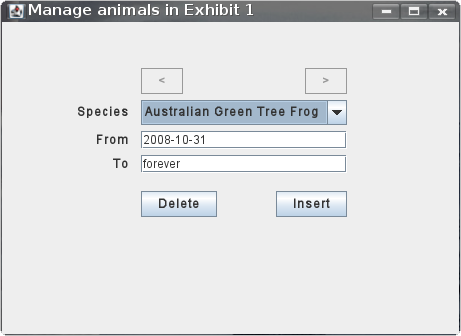
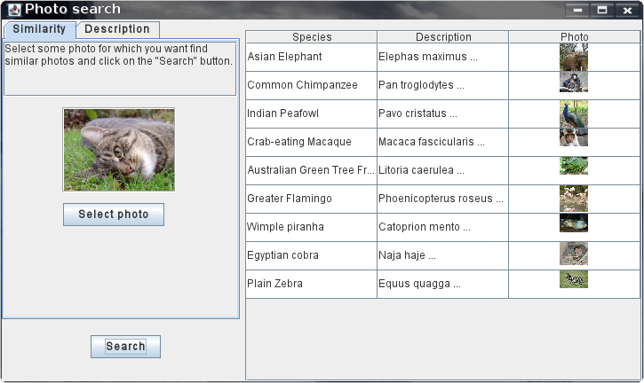
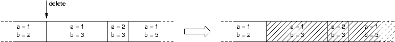
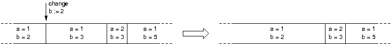
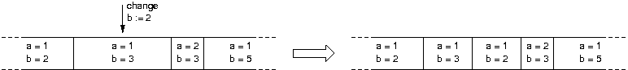
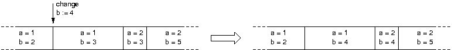
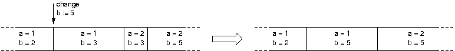

PDB 2008 Help Contents
Introduction
This application is a Zoo management system that exploits concepts of temporal, spatial and multmedia database data storage.
Application Window
When you start the application, you will see the following main window:

Main Menu
| Item | Description |
|---|---|
| File | General application functionality |
| Search | Allows to search for animal pohotos |
| Queries | Various queries for execution |
| Database | Allows to restart the database to the default state |
| Help | Provides additional information |
Map modes
You can choose from three different map modes - each provides a different view:
- Map - display just building outlines
- Building - display building outlines and photos
- Animal - display building outlines and animals in them
The last mode allows you to move animals between objects using the "drag-and-drop" feature.
Movement and zoom
You can move with the map by using the right panel with arrows and zoom by moving the slider.
Object properties editation
When you select some object, at the right panel you will see its name, photo and description. You can change them by right mouse clicking on them (note that you cannot change every property of all objects).
Contextual popup menu
If you right click on the map (or on some object), a contextual popup menu will appear. Following actions are possible:
- Insert - insert an object (pavilion, exhibit, etc.)
- Delete - delete the selected object
- Show - show the nearest object (pavilion, exhibit, etc.)
- Animal management - show the animal management window (only on objects that can contain animals)
- Queries - get some information for the selected object
Objects insertion
You can insert the following objects:
- Pavilion - left mouse click for each of the pavilion vertex, right mouse click to finish the insertion
- Exhibit - same way as a pavilion is inserted
- Refreshment - left mouse click to place the center of the refreshment, then another left click to adjust the diameter of it (right mouse click to cancel)
- Path - left mouse click for the beginning and for the end of the path (right mouse click to cancel)
- Entrance - left mouse click on the position where you want to place the entrance (right mouse click to cancel)
Animal Management
When you right click on some pavilion or exhibit and select "Animal management", you will see the following window for animal management:
In this window you can manage animals in the selected pavilion or exhibit. You can either insert a new animal (select one from the species box, set both dates and press the "Insert" button) or delete the selected animal by pressing the "Delete" button.
If you want to move animals from one location to another, use the "drag-and-drop" feature.
Photo Searching
When you click open the "Search" menu and click on the "Photo" menu item, you will see the following window for photo searching:
You can either search by image similarity (upload some photo by pressing the "Select photo" button and then press the "Search" button) or image description (write some description of the photo you are looking for and press the "Search" button).
Temporal Queries
Data insertion
When a piece of data is inserted, it is inserted as a single interval from the insertion time to infinity (forever). Due to this, at the time of insertion it must be checked that the data does not collide with any data which is or will be valid (i.e. with all the intervals that end after the insertion time).
Data deletion
The data deletion process deletes all instances of the data from the database from given time (passed by the user) on. All intervals of the data which start after the given time are deleted. However, the case of the interval that starts before the deletion time and ends after the deletion time must be taken care of. Two possible cases may happen:
- The deletion time coincides with the start of the interval. In this case, the interval is deleted as well. 
-
The deletion time does not coincide with the start of the interval. In this case, the interval shortened by setting the end time of the interval to the deletion time.

Data modification
The most difficult data manipulation operation is data modification. We will try to explain our solution of this operation in the following text.
- A control operation that checks that the modification is valid (there is a time interval that can be modified) and the modification makes sense (an actual change happens).
-
Now, we are modifying a time interval (the one the modification time is in) and there are two possible cases:
- The modification time coincides with the start of the interval. In this case, the modified data is changed in the interval. In this case, however, there may appear a situation that the modified interval ends up the same as the interval that directly precedes this one and they are continuous (they share one point in time). If this happens, both intervals are joined into one. 
- The modification time does not coincide with the start of the interval. When this happens, the original interval is shortened to the time point when the modification takes place and a copy of the interval (with the particular piece of data modified) is inserted with validity from the modification time to the end of the original interval. 
-
When the first interval is taken care of, all the following intervals that are continuous (i.e. that share one time point) and have the value of modified fields in the first interval are also changed (the value must again be continuous). Two cases may again take place:
- The last of the intervals that changed is not the same as the following interval. No additional action is performed. 
- The last of the intervals that changed is the same as the following interval. The intervals are the same so they are merged into one (the first interval is stretched by setting its end time to the end time of the second one and the second one is deleted. 
Special queries
There are the following temporal queries in the application:
-
The query for the count of genera in the whole Zoo at given time (<date>):
VALIDTIME DATE <date> SELECT COUNT(*) FROM (SELECT UNIQUE genus.genus_id FROM animal_pavilion_rel JOIN animal ON animal_pavilion_rel.animal_id = animal.animal_id JOIN genus ON animal.genus_id = genus.genus_id UNION SELECT UNIQUE genus.genus_id FROM animal_exhibit_rel JOIN animal ON animal_exhibit_rel.animal_id = animal.animal_id JOIN genus ON animal.genus_id = genus.genus_id) -
Query for the name of the pavilion with the highest number of animals at given time (<date>):
VALIDTIME DATE <date> SELECT name FROM pavilion WHERE pavilion_id = (SELECT pavilion_id FROM ( SELECT pavilion_id, COUNT(*) AS num FROM animal_pavilion_rel GROUP BY pavilion_id ORDER BY num DESC) WHERE ROWNUM = 1) -
Query for the count of genera and classes in given pavilion (<pavilion-id>) at given time (<date>):
VALIDTIME DATE <date> SELECT COUNT(DISTINCT gn), COUNT(DISTINCT cs) FROM (SELECT genus.genus_id AS gn, genus.class_id AS cs FROM animal_pavilion_rel JOIN animal ON animal_pavilion_rel.animal_id = animal.animal_id JOIN genus ON animal.genus_id = genus.genus_id WHERE animal_pavilion_rel.pavilion_id = <pavilion-id>) -
Delete query for temporal data (deletes all items from the temporal database in given table (<temporal-table>) the ID column (<object-key>) of which has given ID (<id>) from given date (<date>):
VALIDTIME PERIOD[<date>-forever) DELETE FROM <temporal-table> WHERE <object-key> = <id>
-
Query that gets names of all animals that are in given pavilion (<pavilion-id>) from given date (<date>) and assigns time intervals that are related to them:
VALIDTIME DATE <date> SELECT an.species, VALIDTIME(an_pav_rel) FROM animal_pavilion_rel an_pav_rel JOIN animal an ON an_pav_rel.animal_id = an.animal_id WHERE an_pav_rel.pavilion_id = <pavilion-id>
About Authors
| Ondøej Lengál | xlenga00@stud.fit.vutbr.cz |
| Libor Polèák | xpolca03@stud.fit.vutbr.cz |
| Boris Procházka | xproch63@stud.fit.vutbr.cz |
| Petr Zemek | xzemek02@stud.fit.vutbr.cz |
We are students at the Faculty of Information Technology at Brno University of Technology in the Czech Republic and this is our project for Advanced Database Systems.